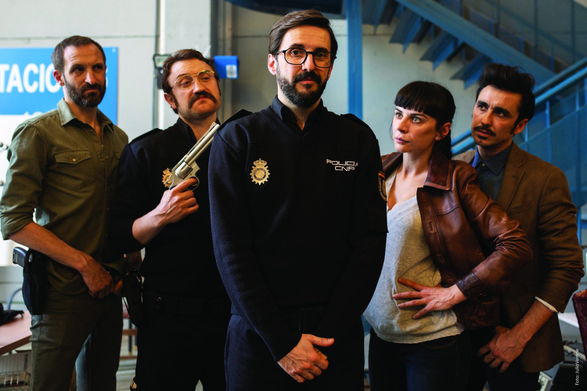
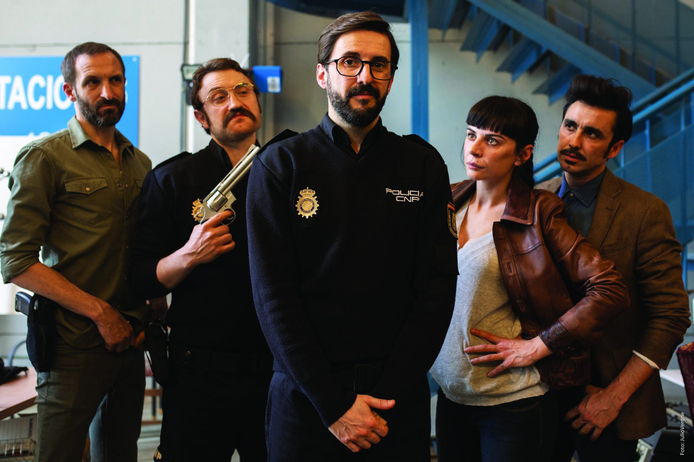
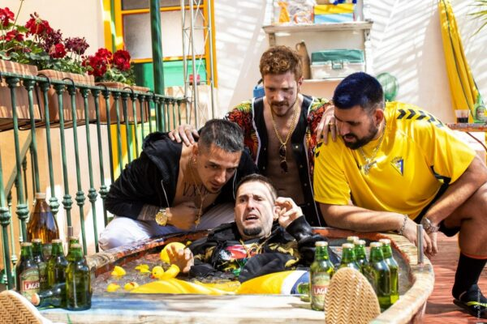
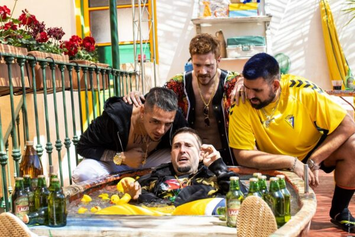

Inicio
Descripción de la película
Desde que era apenas un niño, Sebastián Arroyo (Julián López) tenía grandes dotes tocando el piano y todos los de su alrededor le auguraban un gran futuro como músico. Sin embargo, años después, con aspecto de pringado y sin haber triunfado en el piano, Sebas decide solicitar plaza de policía en Cádiz. Así, acaba trabajando bajo el mando de Josefa Garrido (Miren Ibarguren), inspectora de la brigada antidroga. Precisamente por su aspecto y dotes de concertista clásico, es escogido para formar parte de una peligrosa misión: infiltrarse como miembro de "Los Lolos", una banda hortera de flamenco-trap que va a actuar en la boda de la hija de un traficante de drogas. Desconocido en el mundo del hampa, Sebas se convierte en "Cani" y se hace pasar por el teclista del grupo. Así, conocerá a Lucy (Natalia de Molina), la manager de esta banda. Aunque en un principio el plan parece sencillo, Sebas será víctima de miles de aventuras, todo tipo de situaciones disparatadas y, por supuesto, música, mucha música
Datos generales
Operación Camarón es una película española de comedia lanzada el 24 de junio de 2021. Tiene una duración de 105 minutos, la clasificación está en los 16 años y ha recaudado más de 3.344.704 millones de euros. Hay muchos críticos que la categorizan como la gran comedia del verano.
Director
Datos principales
Nombre: Carlos Therón Sánchez
Nacimiento: 15 de abril de 1978
Lugar de nacimiento: Salamanca
Edad: 43 años
Nacionalidad: Española
Personajes
Sebas
Pianista de corazón, pringado por naturaleza, policía de rebote y ahora… Lolo por obligación.
Lolo
Líder y vocalista de Los Lolos. No le caes bien.
Lucy
Hermana del Lolo y mánager del grupo. Haría lo que fuera con tal de llevarle la contraria a su hermano, aunque (muy) en el fondo se quieren.
Pepa
Líder de la unidad antidroga. Atiza primero, pregunta después.
Mula
Ayudante de Pepa, será el encargado de transformar a Sebas en un cani de los pies a la cabeza. Su peli preferida es la Señora Doubtfire.
Plataformas de Streaming
| Links | Valoración | Compra | Alquiler |
|---|---|---|---|
| Movistar+ | 3.5/5 | 10€ | |
| Mitele | 4/5 | 3.95€ | 9.95€ |
| 2.9/5 | 3.99€ | ||
| 3.2/5 | Gratis | ||
Media
Imágenes de la película
 

 

Tráiler
Vídeo personal
Canciones
Cachitos de amor
Chico Perfecto
Tangos del Guishi
Mejores actores
| # | Nombre | Personaje | Puntuación |
|---|---|---|---|
| 1 | Natalia de Molina | Lucy | 9.5/10 |
| 2 | Carlos Librado | Lolo | 8/10 |
| 2 | Miren Ibarguren | Pepa | 7.4/10 |